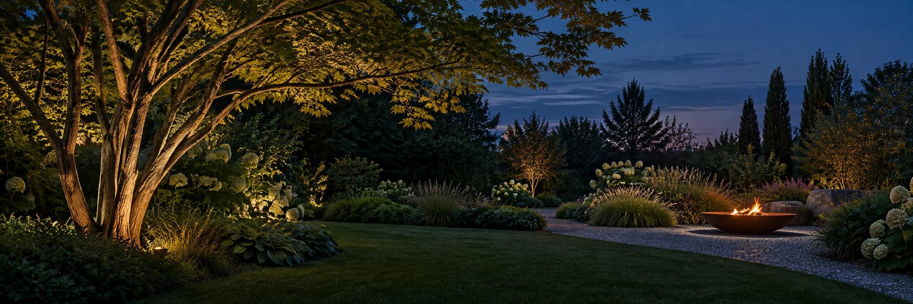
↳ EFFKOWE OGRODY / EWA KATRYCZ
Malowniczy ogród we Wrocławiu.
Lokalizacja
Wrocław
Powierzchnia
Do uzupełnienia
Materiały
Wizualizacje projektu
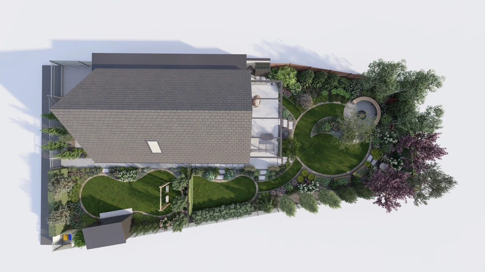
WIZUALIZACJE PROJEKTU
Ogród z każdej strony.

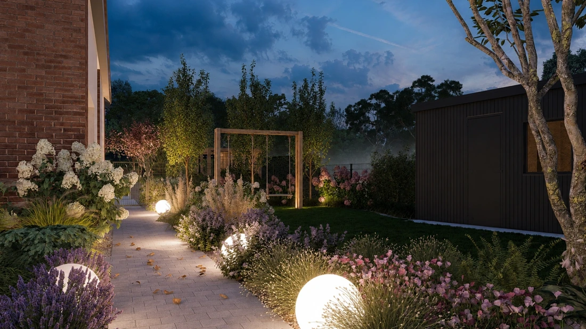

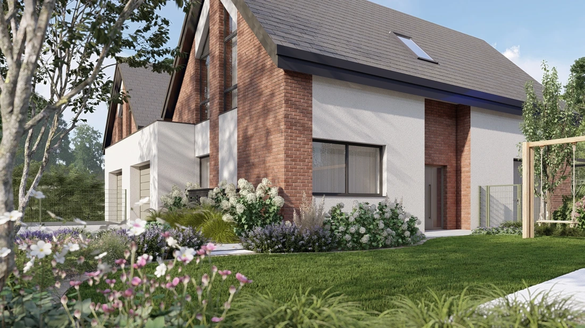

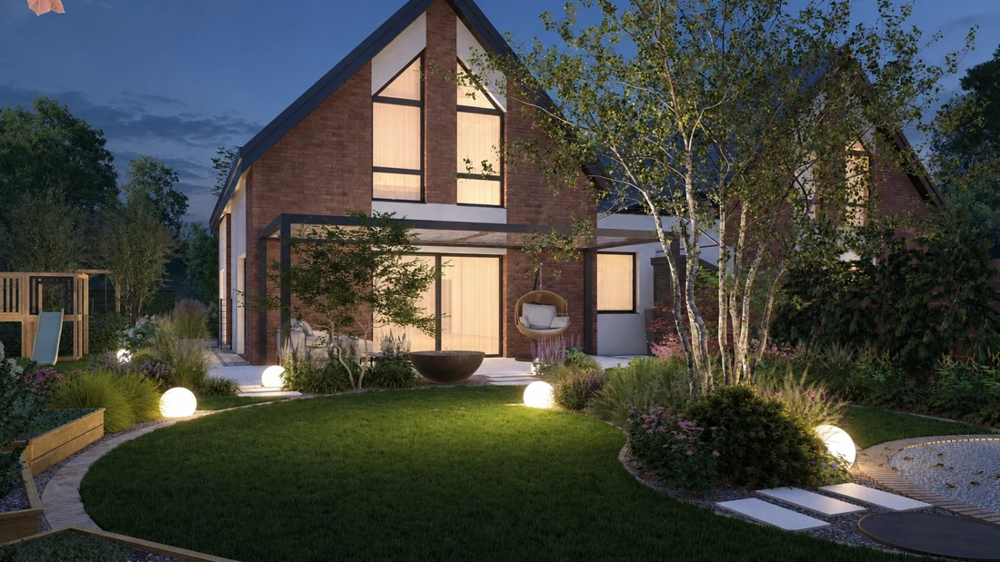

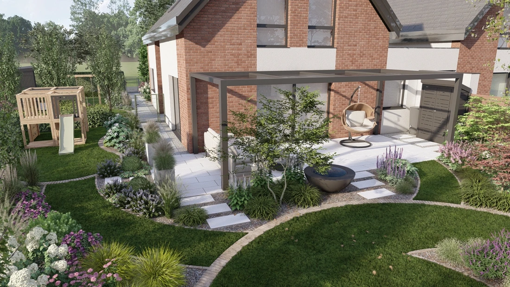

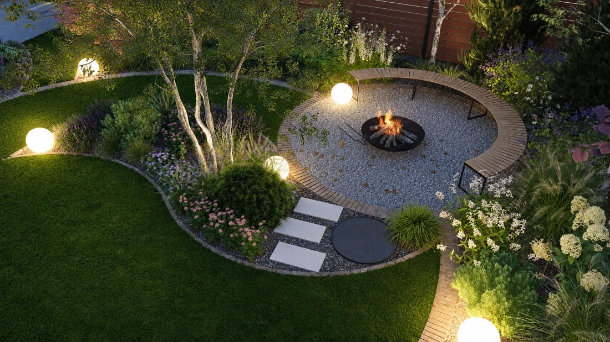

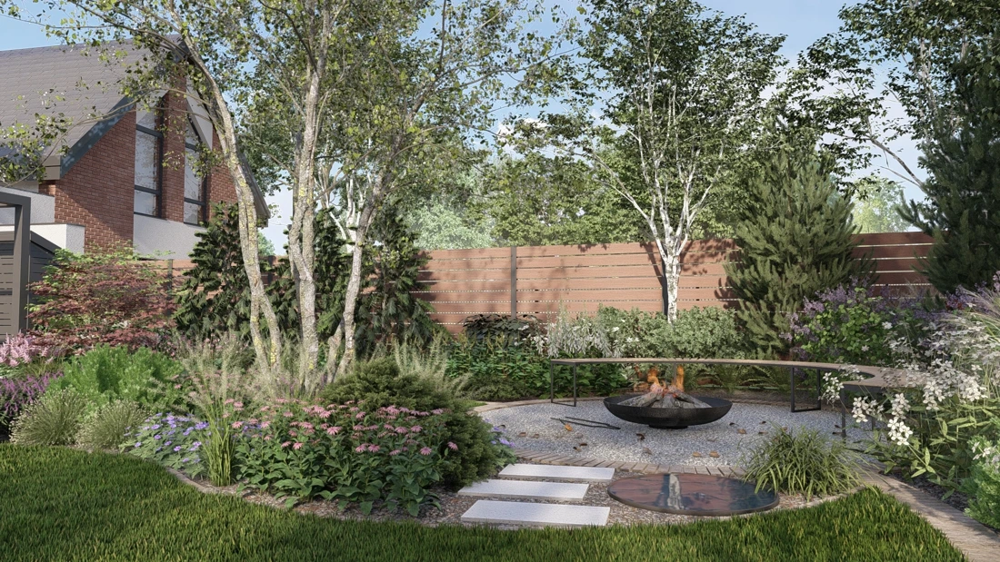

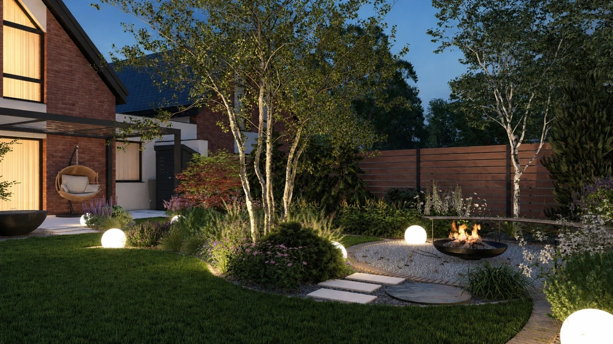

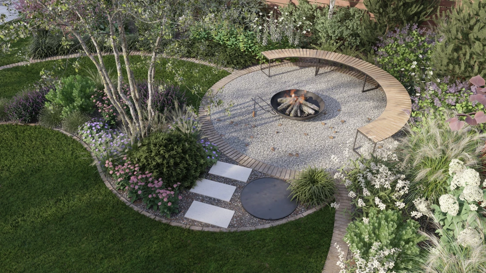

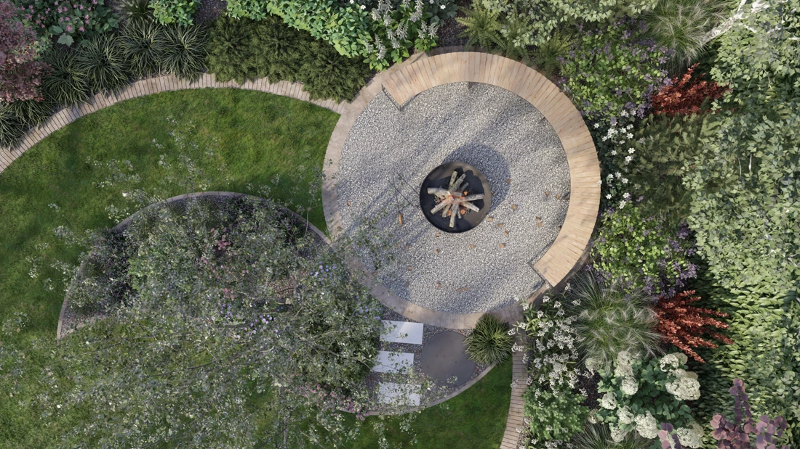

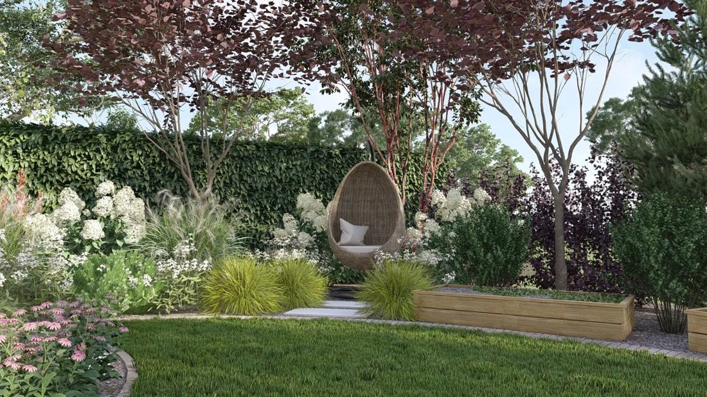

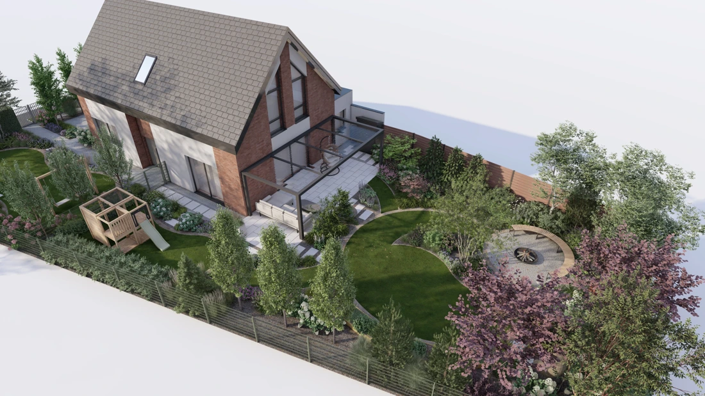

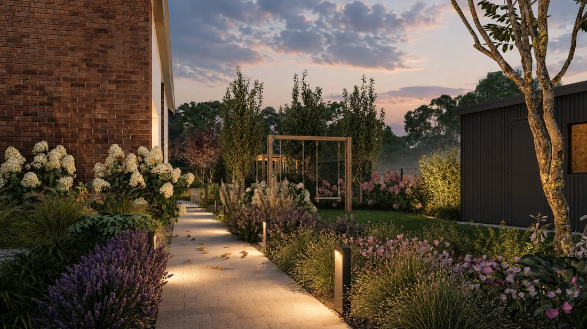

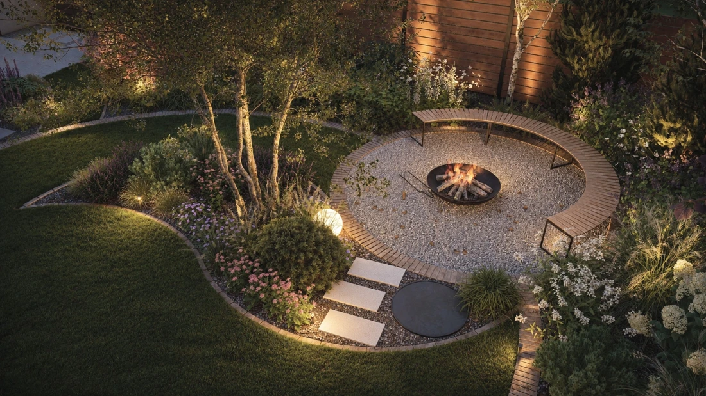
Szczegółowy opis projektu zostanie uzupełniony.
KOLEJNY OGRÓD MOŻE BYĆ TWÓJ